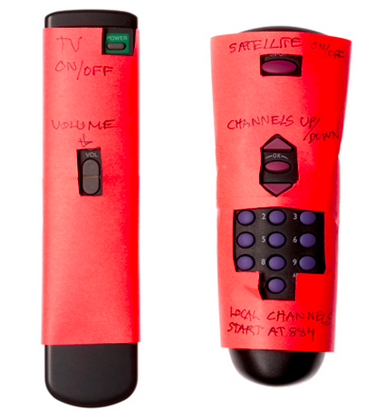

Introductions
This material has been prepared primarily for a special one-day workshop to be presented in Delta. It tackles the topic of how to find and define user experience problems.
Who am I?
I am a designer at iQmetrix. I have been a user experience designer on projects for Nike, Nintendo, BC Ferries, BC Lotteries, Lululemon, BC Hydro, A&E Networks, and many many more.Who are you?
What are we doing today?
- Introduction
- What is User Experience?
- Finding our problems
- Finding our users
- Applying Design Thinking
What is User Experience (UX)?
It's the complete package of how a person experiences and interacts with your product or service or brand or organization.
Good UX and Bad UX
Let's look at the key components of good user experience. Good UX should be:
- Useful: It fulfills a person's goal.
- Usable: People should find it easy to use.
- Pleasant: People should find the experience enjoyable, or at least not aggravating. Ideally, it expresses personality (e.g. edgy, charming, fun, authoritative).
Bad UX then must fail one or more of those criteria.
Give some of your own personal examples of a terrible or delightful user experience
Consider the light switch
How can you tell which light switch controls which light in a large room?
Consider doorhandles
How can you tell which direction to turn the knob? to push or pull the door?
Consider doors and lights together
Consider remote controls
When you visit a friend's house, do you use her remote? Are you confused by it? Are visitors to your house confused by your remote control?

Consider online forms on websites or in mobile applications
How many of you have been frustrated when filling out an online form?
Small tragedies make a difference
Alone, any one of these small tragedies does not mean much. But added up through the course of a lifetime, they can drive people to great frustration and anger. As designers and builders, we are in a position to turn down the suck and turn up the good. In other words, we can design small experiences in our lives to make life a little more bearable and suck less overall.
Finding our Problems
"Super-noticing"
Recognizing friction and problems
Discussion: Were there any problems as a result of the windstorm we had over the weekend?
Listen and notice when people are
- Angry
- Frustrated
- Complaining
There is probably a problem under there somewhere
Finding problems in our own homes
Gaming example - game controllers.
Look back at the UX examples above.
Finding problems in our communities
Given what you know now, can you think of problems in our communities? Are any of those problems natural candidates to be solved with technology?
Here are some recent headlines - are there any problems worth solving here?
Delta Asking For More Signs On Highway
Ministry of Transport needs a plan for influx of traffic with TFN mall
Owner eventually reunited with bicycle
And here are some more community-based ideas
Imagine an app that allows citizens to mark fallen trees that need removal
Imagine a technology that helps people when their power is out
Imagine an app that allows citizens to mark potholes that need filling
Imagine an app that allows citizens to mark anything that needs attention in their community (potholes, graffiti, garbage, lost dogs, clogged street drains)
You should ask some questions as a habit during this problem finding phase:
- Is it actually a real problem? How many people are having that problem? Are you assuming that it's a problem? Are you empathizing with others with this problem, or are you looking at it from a self-centred point of view?
- Do you know enough facts about the problem to start exploring solutions?
- Upon first glance, is the use of technology appropriate to help solve this problem? or perhaps it's a people/political/social problem? Note: technology might not be 100% of the solution, but might be a part of the eventual solution.
Which brings us to "Super-listening" - a close sibling to "Super-noticing"

You have to listen carefully to find the deeper problem, and not just take it for granted that what they're saying is the right solution or problem. One nifty trick I sometimes use is to ask "Why?" five times - listening closely to the person's answer each time to see if I have uncovered the root of the problem.
Finding our users
Screen for your users
Activity: a simple screener
Practice empathy
What is empathy? How does it differ from 'sympathy'?
Get Over Yourself!
One of the biggest hurdles that a young designer must overcome is herself. Designers are almost never designing for themselves. They are designing for other people.
But this doesn't simply mean asking people what they want. Instead, we get the person explain what they’re struggling with instead of just telling us a solution. Users have great suggestions but don’t necessarily always know what the best solution is. So we must empathize and think back about their intent. What they were trying to do, and how we could help them do that better or easier?
Activity: blindfolds and smartphones
But what if I just really love making stuff?
That's cool! You can make stuff as a hobby. Lots of people do it. One guy I work with, Nevin, he is a hobbyist maker. He made a light to tell the office if somebody is playing the XBox
One of the important things that separates hobbyists from professionals is the ability to build great things for people who are not yourself. It becomes really cool when you can match your love of making stuff with knowing how to make stuff for other people, thereby improving their lives.
Alex Beim of Tangible Interaction - an example of somebody who turned from a hobbyist-maker to a professional
Discussion: closing the taste/talent gap
Design Thinking
It "is a discipline that uses the designer’s sensibility and methods to match people’s needs with what is technologically feasible and what a viable business strategy can convert into customer value and market opportunity." - taken from this fantastic Harvard Business Review article.
Some nuggets from IDEO's Design Thinking process
"The goal of prototyping isn't to finish"
"In another health care project, IDEO helped a group of surgeons develop a new device for sinus surgery. As the surgeons described the ideal physical characteristics of the instrument, one of the designers grabbed a whiteboard marker, a film canister, and a clothespin and taped them together. “Do you mean like this?” he asked. With his rudimentary prototype in hand, the surgeons were able to be much more precise about what the ultimate design should accomplish."
"We've had team members ... (s)leep on rubber sheets overnight at an elder-care facility to relate to spending one’s last months or years there"
"People were immersed in patients’ day-in, day-out activities,... There was a lot of waiting with no explanation."
It requires you to think deeply about problems from many dimensions. It requires you to come up with simple human-centred solutions quickly, then iterate over them to learn how to improve or change the direction of the solution. One old-timey story about the Hudson's Bay Co. helps me think about the iterative design process - how did they cross the country from East to West?
Some examples to inspire you about innovations in the Internet of Things space
Corning Day of Glass